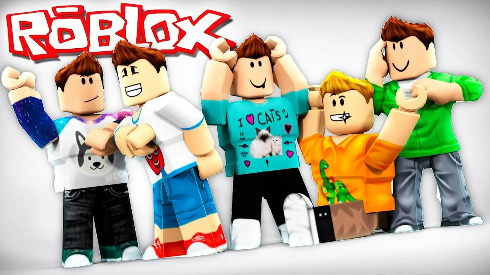
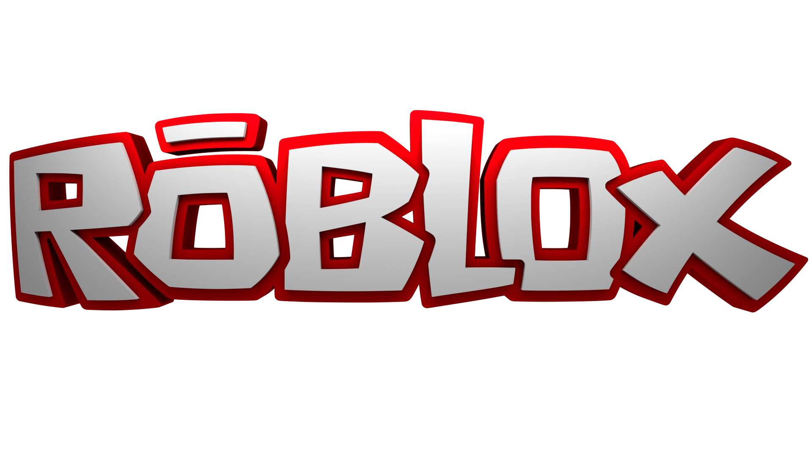

Roblox Wiki
Roblox — игровая онлайн-платформа и система создания игр, позволяющая любому пользователю создавать свои собственные и играть в созданные другими игры, охватывающие широкий спектр жанров. В некоторых источниках Roblox называют метавселенной. По состоянию на август 2020 года у Roblox более 164 млн активных пользователей в месяц; на октябрь 2021 года более 226 млн. Все они, в общей сумме, наиграли в нём более 107 млрд часов. Причём в Roblox играют более половины всех детей США в возрасте до 16 лет.
Как же играть в Roblox?
На самом деле все очень просто, в роблоксе есть разные типы режимов, а точнее типов игр, например: симуляторы, хорроры(ужастики), всякие истории, стрелялки, и многое другое. Так же в роблоксе можно создавать себе персонажа и играть за него. Если вы не знаете как управлять персонажам в роблоксе это можно посмотреть в настройках. Инструкцию каждого режима(игры) можно найти в ее настройках
Самые популярные режимы в Roblox.

Cкачать игру